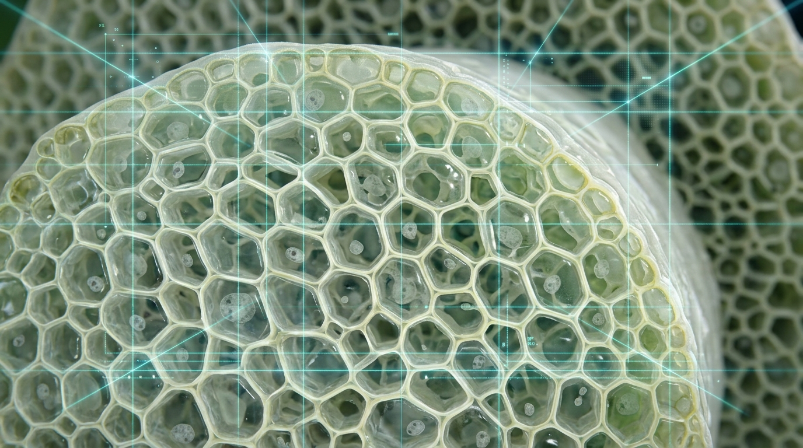
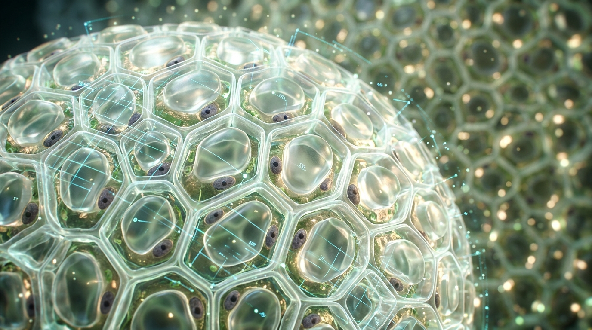

🧬 欢迎来到 AI 虚拟微观生物实验室
现实中的显微镜只能看到细胞轮廓，看不见淀粉长链和酶分子的剪切过程。 在我们的 AI 实验室里，您可以亲手操作 3D 显微镜，从一根鲜萝卜逐层深入穿透到分子反应现场！
小学科学跨学科探究 · 分子级催化仿真与微观显微实测平台





含有丰富直链与支链淀粉，组织细胞含水量大
🤔 请同学们预测：如果经历深秋霜降持续 0℃ 低温：
请在左侧选择您的科学预测假说
点击【启动实验检验】，资深老科学家陈博导将为您实时学术解密！